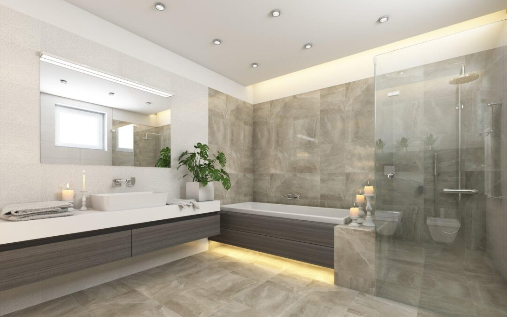

전체 콘셉트 & 레이아웃
테마: 자연 속 고급 별장, 숲 속 안식처 같은 럭셔리 공간
핵심 원칙: 자연광 최대화, 살아있는 식물 대거 도입, 천연 소재 레이어링, 실내-실외 경계 허물기
레이아웃: 오픈 플랜 거실 → 마스터 베드룸 → 스파 같은 욕실
오픈 플랜 거실 – 자연과의 교감 중심
거실은 별장의 '심장'으로, 오픈 플랜으로 설계해 가족·손님과의 소통과 자연과의 연결을 극대화합니다.
• 플로어 투 실링 대형 창문과 슬라이딩 도어로 실내-실외 완전 개방 → 풍부한 자연광과 주변 경관 유입
• 여러 대형 화분·행잉 플랜트 배치 → 공기 정화와 시각적 안정감
• 소파·라운지 존: 우드 프레임 소파, 천연 린넨 쿠션, 낮은 우드 테이블로 코지함 강조
• 천연 소재 레이어링: 재생 오크 바닥, 석재 벽면 포인트, 라탄·우븐 액세서리
이 공간은 휴식, 독서, 모임 등 다목적으로 사용되며, 하루 종일 변하는 자연광에 따라 분위기가 살아납니다.

마스터 침대 영역 – 깊은 휴식 중심
헤드보드 뒤 리빙 그린 월 설치 (공기 정화 + 시각적 안정)
오가닉 린넨·대나무 침구, 행잉 플랜트 배치
생체 리듬 조명으로 자연스러운 수면 환경

욕실 – 바이오필릭 스파 힐링 존
• 샤워 공간: 오픈형 레인 샤워화
• 바닥·소재: 천연 석재 + 부분 티크 우드, 우드 캐비닛으로 따뜻함 추가
• 조명 보완: 자연광 부족 시 따뜻한 앰비언트 LED(생체 리듬 지원)
